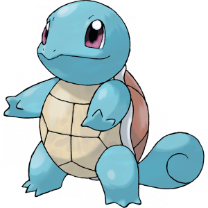

| HOME PAGE | POKEDEX |
Squirtle
|  | Squirtle è un Pokémon di tipo Acqua. Insieme a Bulbasaur e Charmander, è uno dei tre Pokémon iniziali disponibili all'inizio di Pokémon Rosso, Verde, Blu, Rosso Fuoco e Verde Foglia. Inoltre, viene donato dal Professor Platan insieme a Bulbasaur e Charmander appena si entra nel suo laboratorio a Luminopoli. Si evolve in Wartortle a partire dal livello 16, e quindi in Blastoise a partire dal livello 36. |